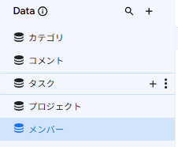
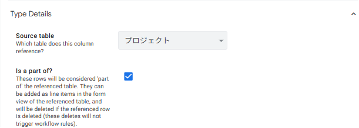

複合リレーションの構築
2-1 5テーブルの全体像とリレーション
第1章で確認した5テーブル構成を、本章で実際に作成します。中級編との最大の違いは、Ref（参照）が複数の階層にわたって連鎖する 点です。
■ リレーションの全体像
カテゴリID(Ref→カテゴリ)
担当者(Ref→メンバー)
投稿者(Ref→メンバー)
■ 中級編との違い ─ 「3階層リレーション」と「Is a part of?」
中級編の勤怠管理アプリでは、リレーションは 社員マスタ → 勤怠記録 のような 2階層 でした。今回は プロジェクト → タスク → コメント と 3階層 に深くなります。
また、今回は単純な Ref に加えて 「Is a part of?」 という設定を使います。これは「子レコードを親と一緒に扱う」ための設定で、次のような効果があります。
- 親レコードを削除すると、関連する子レコードも自動的に削除 される
- 親の詳細画面に 子レコードを inline で表示 しやすくなる
- 親レコードのフォームから直接 子レコードを追加 できる
2-2 スプレッドシートの準備
第1章でダウンロードした練習用ファイル 「【上級編】プロジェクト管理アプリ_サンプルデータ.gsheet」 を使用します。このファイルには5つのシートがあり、それぞれが5つのテーブルに対応します。
■ スプレッドシートの構成
| No. | シート名 | 用途 |
|---|---|---|
| 1 | メンバー | チームメンバーのマスタ（6名分のサンプル） |
| 2 | カテゴリ | プロジェクトの分類マスタ（4種類） |
| 3 | プロジェクト | プロジェクトデータ（5件のサンプル） |
| 4 | タスク | タスクデータ（12件のサンプル） |
| 5 | コメント | コメントデータ（8件のサンプル） |
■ サンプルデータ（コピペでスプレッドシートに貼り付け）
下記がスプレッドシートに入力するサンプルデータです。各テーブルの右上の 「📋 コピー」 ボタンをクリックすると、ヘッダー行を含むデータがクリップボードにコピーされます。スプレッドシートの該当シートの A1セルに貼り付け してください（タブ区切りなので、自動的に各セルに分かれます）。
| メンバーID | 氏名 | メールアドレス | ロール | 所属部署 |
|---|---|---|---|---|
| M001 | 山田太郎 | yamada@example.com | 管理者 | 開発部 |
| M002 | 佐藤花子 | sato@example.com | メンバー | 開発部 |
| M003 | 鈴木一郎 | suzuki@example.com | メンバー | 営業部 |
| M004 | 田中次郎 | tanaka@example.com | 管理者 | 営業部 |
| M005 | 伊藤健一 | ito@example.com | メンバー | 開発部 |
| M006 | 髙橋美咲 | takahashi@example.com | メンバー | 総務部 |
| カテゴリID | カテゴリ名 | カテゴリ色 |
|---|---|---|
| C001 | システム開発 | #1976d2 |
| C002 | 営業案件 | #43a047 |
| C003 | 社内施策 | #f9a825 |
| C004 | R&D | #8e24aa |
| プロジェクトID | プロジェクト名 | カテゴリID | 担当PM | 開始日 | 終了予定日 | ステータス | 説明 |
|---|---|---|---|---|---|---|---|
| P001 | 勤怠管理システム改修 | C001 | M001 | 2026/04/01 | 2026/06/30 | 進行中 | 既存の勤怠管理システムをリプレース |
| P002 | 大手企業A社向け提案 | C002 | M004 | 2026/03/15 | 2026/05/15 | 進行中 | 新サービスの提案資料作成と商談対応 |
| P003 | 社内ワークフロー整備 | C003 | M001 | 2026/05/01 | 2026/07/31 | 計画中 | 承認フローの見直しと電子化 |
| P004 | AI検証PoC | C004 | M001 | 2026/02/01 | 2026/04/30 | 完了 | 生成AI活用の社内検証 |
| P005 | 新規顧客B社案件 | C002 | M004 | 2026/04/15 | 2026/07/15 | 進行中 | 定期受注の獲得 |
| タスクID | プロジェクトID | タスク名 | 担当者 | 優先度 | ステータス | 期限 | 完了日 | 工数 |
|---|---|---|---|---|---|---|---|---|
| T001 | P001 | 要件定義書作成 | M002 | 高 | 完了 | 2026/04/15 | 2026/04/14 | 16 |
| T002 | P001 | API設計 | M002 | 高 | 進行中 | 2026/04/30 | 20 | |
| T003 | P001 | DB設計レビュー | M005 | 中 | 未着手 | 2026/05/10 | 8 | |
| T004 | P001 | 画面モックアップ作成 | M005 | 中 | 進行中 | 2026/05/20 | 12 | |
| T005 | P002 | 提案資料作成 | M003 | 高 | 完了 | 2026/04/05 | 2026/04/04 | 10 |
| T006 | P002 | A社プレゼン | M004 | 高 | レビュー中 | 2026/04/20 | 4 | |
| T007 | P002 | 契約書ドラフト | M003 | 中 | 未着手 | 2026/05/01 | 6 | |
| T008 | P003 | 現状フロー調査 | M006 | 低 | 進行中 | 2026/05/15 | 8 | |
| T009 | P004 | AI検証レポート | M002 | 中 | 完了 | 2026/04/25 | 2026/04/24 | 24 |
| T010 | P005 | B社ヒアリング | M003 | 高 | 進行中 | 2026/04/25 | 3 | |
| T011 | P005 | 見積書作成 | M003 | 中 | 未着手 | 2026/05/10 | 4 | |
| T012 | P001 | テスト計画書 | M005 | 低 | 未着手 | 2026/06/01 | 10 |
| コメントID | タスクID | 投稿者 | 投稿日時 | コメント本文 |
|---|---|---|---|---|
| CM001 | T002 | M002 | 2026/04/05 10:30:00 | API仕様のレビュー、本日中に提出します |
| CM002 | T002 | M001 | 2026/04/05 14:00:00 | OK、確認します |
| CM003 | T006 | M004 | 2026/04/15 09:15:00 | プレゼン資料の最終確認お願いします |
| CM004 | T006 | M003 | 2026/04/15 11:20:00 | 資料は問題ないと思います。本番がんばってください |
| CM005 | T004 | M005 | 2026/04/10 16:45:00 | モックアップの方向性、相談したいです |
| CM006 | T004 | M001 | 2026/04/11 09:00:00 | 午後に打ち合わせしましょう |
| CM007 | T008 | M006 | 2026/04/20 13:30:00 | 現状ヒアリング、3部署完了しました |
| CM008 | T010 | M003 | 2026/04/18 10:00:00 | B社訪問は来週月曜に決まりました |
- Google スプレッドシートで対象のシート（例：「メンバー」シート）を開く
- A1セル をクリックして選択
- Ctrl+V（Mac は ⌘+V）で貼り付け
- タブ区切りデータが自動で各セルに展開される
2-3 AppSheetへのテーブル取り込み
スプレッドシートの準備ができたら、スプレッドシート側から直接 AppSheet を起動 してアプリを作成します。この方法だと、シートとアプリが自動的にリンクされるため、後からデータソースの設定をする手間が省けます。
■ 新規アプリの作成（スプレッドシートから起動）
サンプルデータを貼り付けた Google スプレッドシートを開きます。
スプレッドシート上部のメニューバーから 「拡張機能」→「AppSheet」→「アプリを作成」 をクリックします。
AppSheet が新しいタブで開き、スプレッドシートを元にしたアプリの初期版が自動生成されます。最初に開かれているシート（通常は1枚目のシート）が最初のテーブルとして取り込まれます。
エディタ右上の アプリ名（自動でスプレッドシート名から生成されています）をクリックして 「プロジェクト管理アプリ」 に変更し、Save をクリックします。
左メニューの Data アイコン をクリックして Tables 一覧を開きます。最初に取り込まれたシート（1テーブル）のみが表示されている状態です。
残りの4テーブルを取り込みます。「+ New Table」 をクリックし、同じスプレッドシート内の 他のシート（メンバー / カテゴリ / プロジェクト / タスク / コメント のうち、まだ取り込まれていないもの）を順番に選択します。これを4回繰り返して、5テーブルすべてを取り込みます。
5テーブルすべてが取り込まれたら、Data → Tables 画面で次の通り設定します。
- データソースが自動でリンクされる（AppSheet 側でファイル選択ダイアログを開く必要がない）
- スプレッドシートと AppSheet が 同じ Google アカウント で紐づくため、権限設定が自動化される
- 後でスプレッドシートを編集したときに、AppSheet 側で Sync を押すだけで反映される
■ テーブルの基本設定
| テーブル名 | Are updates allowed? | 備考 |
|---|---|---|
| メンバー | Read-Only | 管理者だけが別途編集（運用上の安全策） |
| カテゴリ | Read-Only | マスタデータのため |
| プロジェクト | Adds, Updates, Deletes | PMが日々操作する |
| タスク | Adds, Updates, Deletes | メンバーがステータス更新する |
| コメント | Adds, Updates | 削除は履歴保全のため不可 |

2-4 各テーブルのカラム設計
テーブルを取り込んだら、各カラムの Type（型）と KEY/LABEL を正しく設定します。AppSheet が自動推定した内容を、業務に合った形に修正していきます。
■ ① メンバーテーブル
| カラム名 | Type | Key | Label | 備考 |
|---|---|---|---|---|
| メンバーID | Text | ✓ | — | 主キー |
| 氏名 | Text | — | ✓ | 表示名 |
| メールアドレス | — | — | Security Filter で使用（第3章） | |
| ロール | Enum | — | — | 管理者 / メンバー |
| 所属部署 | Text | — | — | — |
■ ② カテゴリテーブル
| カラム名 | Type | Key | Label | 備考 |
|---|---|---|---|---|
| カテゴリID | Text | ✓ | — | 主キー |
| カテゴリ名 | Text | — | ✓ | 表示名 |
| カテゴリ色 | Color | — | — | 第6章の Format Rules で使用 |
■ ③ プロジェクトテーブル
| カラム名 | Type | Key | Label | 備考 |
|---|---|---|---|---|
| プロジェクトID | Text | ✓ | — | 主キー |
| プロジェクト名 | Text | — | ✓ | 表示名 |
| カテゴリID | Ref | — | — | → カテゴリ |
| 担当PM | Ref | — | — | → メンバー |
| 開始日 | Date | — | — | — |
| 終了予定日 | Date | — | — | — |
| ステータス | Enum | — | — | 計画中 / 進行中 / 完了 / 中止 |
| 説明 | LongText | — | — | — |
| 進捗率 | VC | — | — | 第4章で設定 |
| タスク数 | VC | — | — | 第4章で設定 |
| 完了タスク数 | VC | — | — | 第4章で設定 |
■ ④ タスクテーブル
| カラム名 | Type | Key | Label | 備考 |
|---|---|---|---|---|
| タスクID | Text | ✓ | — | 主キー |
| プロジェクトID | Ref | — | — | → プロジェクト ／ Is a part of? = ON |
| タスク名 | Text | — | ✓ | 表示名 |
| 担当者 | Ref | — | — | → メンバー |
| 優先度 | Enum | — | — | 高 / 中 / 低 |
| ステータス | Enum | — | — | 未着手 / 進行中 / レビュー中 / 完了 |
| 期限 | Date | — | — | — |
| 完了日 | Date | — | — | — |
| 工数（時間） | Number | — | — | — |
| 残日数 | VC | — | — | 第4章で設定 |
| 期限ステータス | VC | — | — | 第4章で設定 |
■ ⑤ コメントテーブル
| カラム名 | Type | Key | Label | 備考 |
|---|---|---|---|---|
| コメントID | Text | ✓ | — | 主キー |
| タスクID | Ref | — | — | → タスク ／ Is a part of? = ON |
| 投稿者 | Ref | — | — | → メンバー |
| 投稿日時 | DateTime | — | — | Initial value = NOW() |
| コメント本文 | LongText | — | ✓ | 表示名（一覧表示用） |
■ Enum 値の設定
Enum 型のカラムには、選択肢を明示的に設定します。
| テーブル | カラム | 選択肢（Values） |
|---|---|---|
| メンバー | ロール | 管理者 / メンバー |
| プロジェクト | ステータス | 計画中 / 進行中 / 完了 / 中止 |
| タスク | 優先度 | 高 / 中 / 低 |
| タスク | ステータス | 未着手 / 進行中 / レビュー中 / 完了 |
2-5 Refと「Is a part of?」で3階層リレーションを構築
カラム設定の中で 最も重要なのが Ref と「Is a part of?」の設定 です。この章のキモの部分です。
■ Ref の基本設定（中級編の復習）
Ref 型のカラムは、別テーブルへのリンクを作る型です。設定するのは次の2つ：
- Type を
Refに変更 - Source table で参照先テーブルを指定
■ 上級編のキモ ─ 「Is a part of?」の使い分け
本アプリでは Ref を使うカラムが 合計5つ ありますが、「Is a part of?」を ON にするのは2つだけ です。
| カラム | Source table | Is a part of? | 理由 |
|---|---|---|---|
| タスク.プロジェクトID | プロジェクト | ✓ ON | タスクはプロジェクトに「属する」子レコード |
| コメント.タスクID | タスク | ✓ ON | コメントはタスクに「属する」子レコード |
| プロジェクト.カテゴリID | カテゴリ | OFF | カテゴリは単なる分類マスタ。所有関係ではない |
| プロジェクト.担当PM | メンバー | OFF | メンバーはプロジェクトに属さない（独立） |
| タスク.担当者 | メンバー | OFF | 同上 |
| コメント.投稿者 | メンバー | OFF | 同上 |
- プロジェクトが削除 → そのタスクも消えるべき → ✓ ON
- タスクが削除 → そのコメントも消えるべき → ✓ ON
- メンバーが退職 → そのメンバーが担当していたタスクは残すべき → OFF
■ Ref と「Is a part of?」の設定手順
タスクテーブルの「プロジェクトID」カラムを例に、設定手順を示します。コメントテーブルの「タスクID」も同じ流れで設定します。
Data → Columns で タスク テーブルを開きます。
プロジェクトID カラムの Type を Ref に変更します。
右側に表示される設定パネルで Source table を プロジェクト に指定します。
同じパネル内の 「Is a part of?」 を ON に切り替えます。
Save をクリックして保存します。

■ 自動生成される Related カラム
Ref を設定すると、AppSheet は 参照先テーブル側 に 「Related ◯◯」 という Virtual Column を自動生成します。これは「自分の子レコード一覧」を返すリスト型のカラムです。
| 親テーブル | 自動生成される Virtual Column | 内容 |
|---|---|---|
| プロジェクト | Related タスクs | そのプロジェクトに属するタスクの一覧 |
| タスク | Related コメントs | そのタスクに属するコメントの一覧 |
| メンバー | Related プロジェクトsRelated タスクsRelated コメントs | 担当しているプロジェクト・タスク・コメントの一覧 |
2-6 動作確認とまとめ
5つのテーブルとリレーションを構築できたら、プレビューで動作確認をします。
■ 確認チェックリスト
- Data → Tables 画面に5つのテーブル（メンバー / カテゴリ / プロジェクト / タスク / コメント）が並んでいる
- 各テーブルの KEY と LABEL が正しく設定されている
- プロジェクトの「カテゴリID」「担当PM」が Ref で参照先が正しく設定されている
- タスクの「プロジェクトID」「担当者」が Ref で、プロジェクトID は Is a part of? = ON になっている
- コメントの「タスクID」「投稿者」が Ref で、タスクID は Is a part of? = ON になっている
- プロジェクトの詳細画面（プレビュー）で「Related タスクs」が表示され、そのプロジェクトのタスクが一覧されている
- タスクの詳細画面で「Related コメントs」が表示され、そのタスクのコメントが一覧されている
■ 第2章のまとめ
| No. | やったこと | ポイント |
|---|---|---|
| 1 | スプレッドシートに5シート準備 | マスタ2＋トラン3の構成 |
| 2 | AppSheetに5テーブルを取り込み | + New Table から順次追加 |
| 3 | 各テーブルのカラム型を設定 | KEY / LABEL / Type / Enum 値 |
| 4 | Ref を5箇所設定 | プロジェクト→2／タスク→2／コメント→2 |
| 5 | Is a part of? を2箇所で ON | タスク.プロジェクトID／コメント.タスクID |
| 6 | Related カラムの自動生成を確認 | 親テーブルに「Related ◯◯」が追加される |